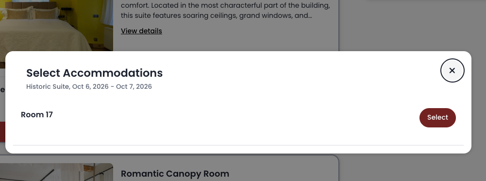
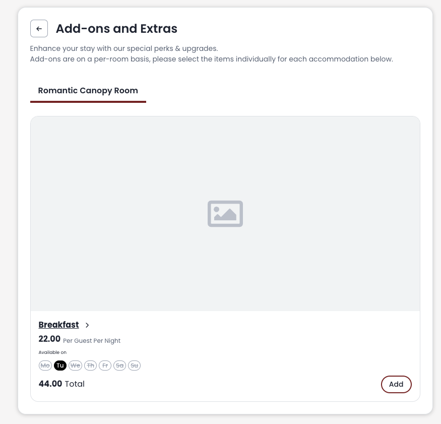

Three Sisters Hotel & Tallinn City Apartments · Mathias Randruut · 5 October 2026
The Three Sisters account only has purchase tracking, and it is not ideal. Purchases are rare, so the account barely learns.
Google Ads runs on machine learning. If we feed it data on who checks availability, it starts to learn what kind of person and what kind of customer most likely books direct with you. Then it goes and finds more of them. Over time that means cheaper and cheaper customers. We also see much better which keywords and search queries actually bring bookers. It gets better all around.
Phrase match is an in-between match type. It does not use Google's machine learning to the max. Once a steady conversion signal is flowing in, we can broaden the keywords and let the system find bookers we are not reaching today. Without that signal, broadening just spends more.
Tracking is the one change that unlocks the others.
The current ads say the facts well: Old Town location, the history, the three merchant houses, boutique positioning, the direct-booking offer. But they read like a description of a hotel, not an invitation.
Three Sisters is not simply a place to sleep in Tallinn. The appeal is the feeling of stepping into the romantic Old Town, where medieval history and boutique luxury come together. The copy should make people imagine what it feels like to stay here.
Use the real rating and review count in #4.
It is a nice website. I like the upscale vibe, and some of it should be kept. The issue is conversion. I think bookings can go up 1.5 to 2 times just by changing the design and making it work harder. Never overestimate the visitor. The design of one red button can move the numbers.
I built a landing page concept to get the point across. It is not fully thought out and it is more basic than the real site. It can be more upscale. But I will take the bet that more people book on it, and that is what matters in the end. Worth looking at other hotel sites that do a lot of direct sales too.
This is the bigger problem. Checking availability lands on Cloudbeds, which is fine. But two things in that flow lose people.
When I click a room I have chosen, this white box pops up. All it shows is "Room 17" and a Select button. Why do I have to select again? It is confusing.

The breakfast add-on has no picture. It does not inspire me to add it, and the page looks a little broken.

Right now the only add-on is breakfast. Adding a few more – special services, treatments, fruit in the room, whatever you can provide – lifts the booking value. Done well, it can double the value of some bookings.
Volume is low, but we are overpaying for the brand terms. The campaign runs Maximize clicks with no bid limit.
The Three Sisters brand campaign is fine: Maximize clicks is okay for brand, and it already has a maximum CPC bid limit. We just need to replicate that in Tallinn City Apartments.
These people are already searching for the brand. As long as we show up, it is already good. We do not have to be first every time.
I expect clicks to get 30–70% cheaper. The range depends on how hard competitors bid on the name – there is more competition than I first thought.
These are my first ideas for the next directions, once the basics above are in place.
The target is about 30 check-availabilities in the last 30 days. From there we can move to broad match, where Google's machine learning starts finding keywords for you. Phrase match does not do that today.
We cannot think of every way people search for a hotel in Tallinn. Broad match finds those searches for us, and it doubles as keyword research. It might not work 100%, but in B2C service verticals like hotels it usually makes things better. This is the first direction to go with the account.
A couple of banners that follow people after they have been on the site. Very cheap to test, easy to set up. €2–3 a day is already useful.
Banners placed on websites about a topic, for example a page about Estonian landmarks. This has to be done carefully, but done right the targeting is good and we are in front of the right eyes.
I do not know your customer 100%, but the younger audience chooses hotels from Instagram. That is the truth. A simple, steady plan there pays off over time.
Design the Old Town experience to be super Instagrammable – the rooms, the breakfast, the little details people photograph. Guests do the marketing for you, and a hotel that looks like that can charge noticeably higher rates just because.